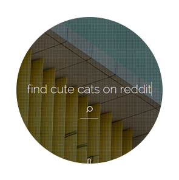
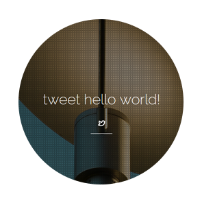

The internet. At your command.
Say hello to Grapplr.
Grapplr is an intelligent, customizable, and beautiful replacement for your browser's homepage.
Make web searches
Search all the engines!
Grapplr allows you to search for content and people within almost all of favorite sites from your
homepage. Yes, even Google!

Find downloads instantly
Get it when you need it
Using the power of Google, Grapplr will try to bring you straight to the download page of the program you need
Tweet
Tweet from your home page
Open up a new tab, compose a new tweet, and send it!

Post to Facebook
Tweet from your home page
Open up a new tab, compose a new tweet, and send it!